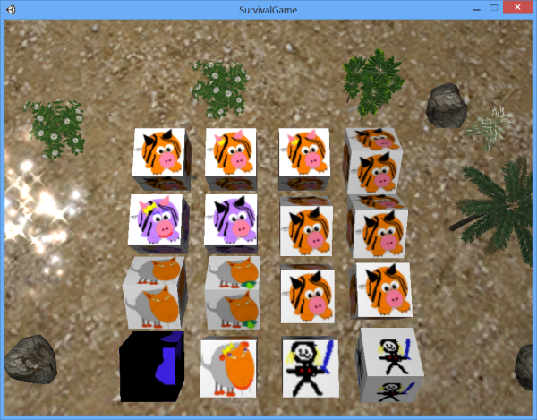

Ha pasado el verano
Varios cambios de librerias
Nos hemos puesto en serio con el desarrollo y hemos estado probando distintas librerías y APIs
LIBGDX
Despues de probar nuestra primera versión funcional en java, nuestra primera elección fue utilizar las librerías LIBGDX Las ventajas que hemos visto son las siguientes:
- Están en java, por lo que podemos utilizar todo el desarollo previo que teniamos hecho
- Sin tener que reescribir nada la aplicacion se puede desplegar en PC, Android, IOS, Mac, etc...
Aqui disponemos de la version jugable mediante la API LIBGDX (los dibujos son echos por mi): Version_0.21_LIBGDX
Unity 3D
En vista de que no avanzabamos en los gráficos, vamos a probar a utilizar Unity 3D
Esto no es una version jugable, pero es un prototipo de las posibildades:
Version_0.3_Unity3D